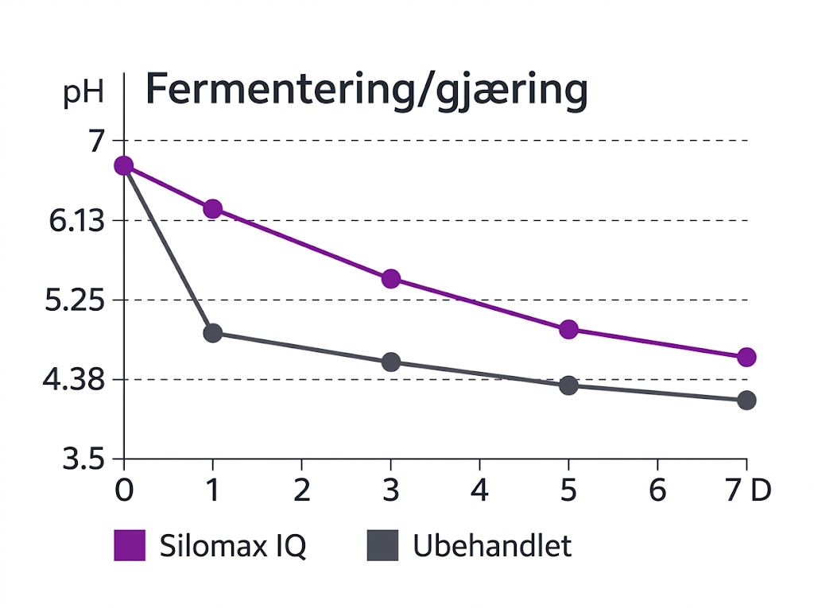
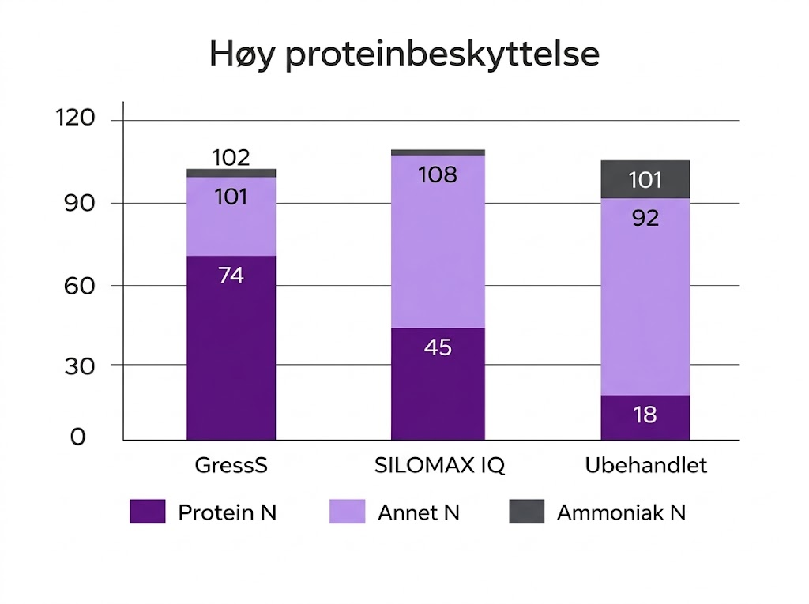

01

Steg 1
Mål opp dose
Mål opp riktig mengde pulver etter antall tonn gras som skal ensileres.

SILOMAX IQ

En naturlig fermentering av gress kan ta fra 2–6 uker.
SILOMAX IQ vil fermentere gresset på 1–2 dager.
Forsøk viser at SILOMAX IQ kan erstatte 1,39 kg kraftfôr, og gir 1,1 liter mer melk per dyr og dag mot kontroll.

SILOMAX IQ reduserer proteinnedbrytning i ensilasje.
Mer protein bevares – gir mer energi og melk fra samme fôr.
Slik klargjør og bruker du Silomax IQ for optimal ensilering
Mål opp riktig mengde pulver etter antall tonn gras som skal ensileres.

Hell pulveret i rent, lunkent vann for å aktivere melkesyrebakteriene.

Rist beholderen godt i minst 30 sekunder til alt pulveret er helt oppløst.

Hell den ferdigblandede løsningen over i doseringsutstyret og start høstingen.